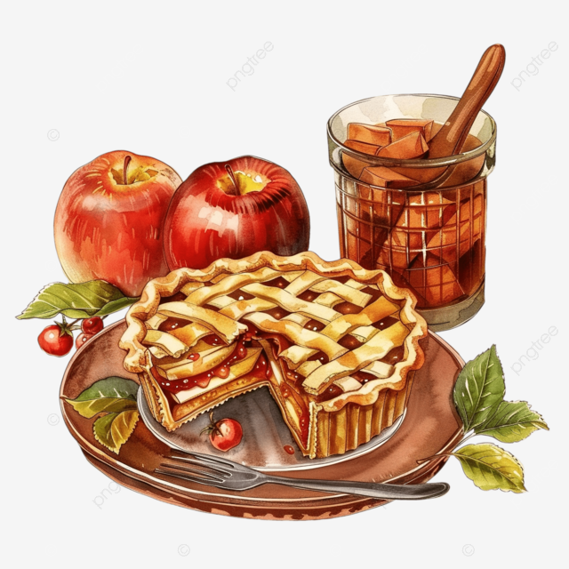
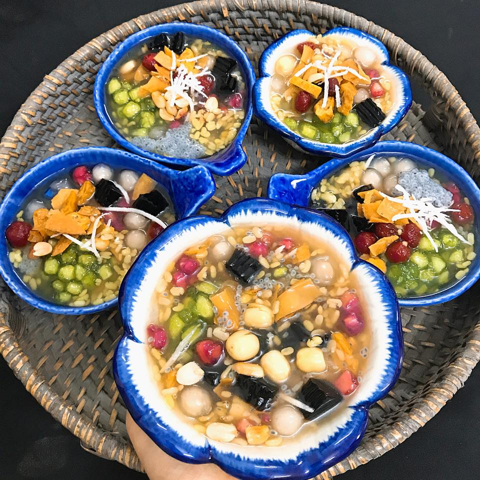

Táo mèo yên bái
Táo mèo là tên gọi của cây có tên là sơn trà. Sở dĩ Sơn trà có thêm cái tên táo mèo vì ...
Xem tiếpChè thạc trái cây
Nấu 1,5 lít nước với 200g đường cho tan. Cho nhò vào, nấu sôi. Tiếp tục cho nhân vào chung, ...
Xem tiếpGỏi đu đủ chay
Bắt chảo đổ chút dầu cho hành, tôi chiên hơi vàng cho tôm vô xào với bột nêm khoảng 2 phút ...
Xem tiếpLẩu hải sản kiểu Pháp
Xương cá rửa sạch, luộc sơ qua nước sôi rồi vớt ra. Nấu nước sôi, sau đó để lửa vừa, cho xương cá, cần tây ...
Xem tiếpMực dồn thịt
Nước ngọt do mực tiết ra trong khi hấp có thể dùng để pha chế sốt cà chua hoặc nêm nếm ...
Xem tiếp